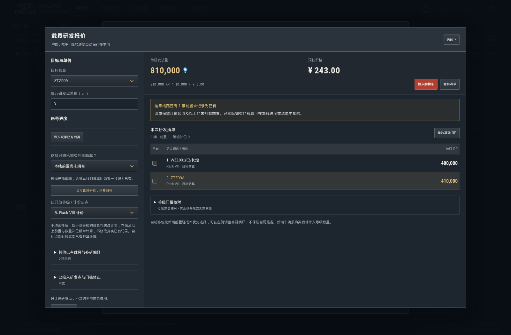

简体中文 · English · Русский · 日本語
WarThunder 研发工作台
查科技树、规划研发、配置出击队列，也能查询战绩、绘制地图走线和关注折扣。
正式站 · QMuse · 国际站 · 完整使用说明

功能一览
| 模块 | 能做什么 |
|---|---|
| 科技树 | 十国、五大军种；搜索、折叠组、前置路线与 AB / RB / SB 权重 |
| 研发估算 | 分别计算载具与配件的剩余研发点；自填单价，合并研发清单 |
| 出击队列 | 保存多套配置、调整乘员槽位顺序、复制或导入分享码 |
| 战绩与车库 | 生涯与近期统计、官方排位、单车表格／卡片、完整车库 |
| 估值与战报 | 查看账号参考价值，生成 Top 5 战报、AI 点评与单车图片 |
| 陆战地图 | 查看地形与任务布局，绘制走线并导出图片或可编辑文件 |
| 折扣日历 | 关注金鹰／礼包载具，对照官方活动与历史预测窗口 |
载具研发
选择目标，填写已有载具、已开放等级和目标进度。清单会列出必要前置及等级补位；合并多个目标时，共用前置只计算一次。

配件研发
按真实等级和栏目查看配件，勾选已完成项目，再填写未完成配件中的部分进度。礼包、金鹰等高级载具默认按已解锁全部配件处理。

载具详情还包含官方图片、获取与价格、三种模式的研发点／银狮收益倍率及前置路线。研发点使用官方图标，中文按“万”缩写；缩放偏好保存在当前浏览器。
估算金额 = 剩余研发点 ÷ 10,000 × 自填单价。 这是自定义换算，不是游戏官方售价或交易报价；未知数据不会按零计算。
语言与保存
- 国际站支持简体中文、English、Русский、日本語；正式站以中文为主。本文截图为中文界面。
- 游客的研发进度、购物车和出击队列保存在当前浏览器；登录后，研发计划、研发购物车和队列可跨设备同步。
- 地图方案与折扣关注保存在本地，请按需导出备份。本站查询公开游戏资料，不需要 Gaijin 密码。
- 载具数据以游戏和官方资料为准；折扣预测不是活动公告，账号估值不是实际成交价。工作台效率分不是官方评级。
更多说明
功能使用说明 · 截图与来源 · 本地开发与贡献 · 反馈问题
玩家自制的非官方工具，代码采用 MIT 许可证。War Thunder 商标、游戏图片与第三方资料归各自权利人所有。感谢官方 Wiki、资料与攻略作者，以及提供反馈的玩家。